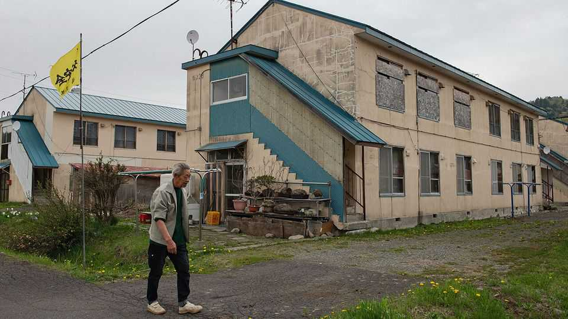

Two Japanese towns offer lessons for shrinking countries
Only some places can hope to grow; others must learn to manage decline

Oct 15th 2026
LESS THAN 40km separates the towns of Nanporo and Yubari, on Japan’s northernmost island of Hokkaido, but their fates could hardly have diverged further. Nanporo, a tranquil commuter town east of Sapporo, the regional capital, is growing its native population at one of the fastest rates in the country. Yubari, a former coal-mining hub that went bankrupt in 2007, has seen its population decline by 95% from its peak. Their contrasting trajectories offer lessons for local life in an era of demographic shrinkage.
Start in Nanporo. The town’s population fell from around 10,000 in 1998 to fewer than 7,400 over the next quarter-century. But in recent years the trend has reversed: by last year, the population had ticked back up to 8,400. Nanporo was one of only nine out of 179 municipalities in Hokkaido to see population growth in 2020-25. It was the only one of those nine to do so without substantial foreign immigration. Meanwhile, Japan as a whole lost some 3m people over the same period.
A sense of optimism is palpable at the Hareppa indoor playground in the town’s central park. Sunlight streams through the new building’s floor-to-ceiling windows, lighting up a gaggle of children clambering up a wooden playhouse under a vaulted ceiling. In the adjoining café and library, a mum and young son peruse a shelf of children’s books: “The Very Hungry Caterpillar”, “Library Lion” and a popular Japanese series called “The Encyclopedia of Big Crises”.
A combination of structural advantages and targeted policy initiatives has helped Nanporo solve its own big crisis. While offering the peaceful capaciousness of the countryside, the town sits comfortably within the economic orbit of Sapporo, less than an hour’s drive away. Local leaders recognised that could appeal to young families, and implemented several incentives to attract them.
Many municipalities elsewhere in Japan have tried such measures, but Nanporo’s have been effective because its efforts were sustained and unique, reckons Saito Takashi, an official. Couples where both partners are under 40 years old, or with children of middle school age or younger, can receive up to ¥2m ($12,500) towards home construction; unused plots of land held in a prefectural land bank are sold at a steep discount. Parents also get 10kg of rice every year, a meaningful treat when rice prices have caused national anxiety.
The Tatsuki family are among the new arrivals. Aoi and Yamato moved to Nanporo with their young son last year, drawn by the combination of proximity to Sapporo and support for young families. They built a home and opened a café on its ground floor, where they do brisk business serving lunch sets of grilled fish and freshly-baked desserts. “It would have been super-expensive to do the same in Sapporo,” Mr Tatsuki says. After seeing the conditions, Mr Tatsuki’s older sister decided to move to Nanporo as well.
Yet Nanporo’s growth has come from migrants moving in, rather than a baby boom. Last year the town still saw twice as many deaths as births. With the national population shrinking, one municipality’s gain is another’s loss. There is a “competitive dynamic”, Mr Saito acknowledges. Not everywhere can be Nanporo.
Many places will be more like Yubari. Its population peaked in 1960 at some 117,000. (Though the size of a town now, it still carries the city designation as a relic of its past glory.) After the last coal mine closed in 1990, Yubari tried to reinvent itself as a tourist destination; mismanagement left it bankrupt. As part of a nationally administered restructuring plan, officials closed schools, halted bus routes and shut the local museum. Cutting services only speeded the decline, laments Yubari’s current mayor, Atsuya Tsukasa.
Since 2022, when Nanporo’s tide began to turn, Yubari has seen its population shrink from around 7,000 to just 5,600. More than half the remaining residents are over 65. “Almost no one is moving in, everyone is leaving,” says Noda Masaru, an entrepreneur. “And when you know the population is going down, you aren’t going to start a business, you’re going to close it.”
Yubari’s case is extreme, but hardly unique. The Population Strategy Council, a group of business and civic leaders, reported in 2024 that some 40% of Japan’s municipalities risk disappearing, given the outflow of young people. “I don’t see any prospect for reversing the trend—it’s not just Yubari, look at small towns across Japan,” Mr Atsuya says. “The question is how to survive in that context.”
While Nanporo, thanks to its favourable location near a regional hub, can realistically pursue revitalisation, for Yubari the task is to manage an inevitable further decline, for instance by becoming more compact. “We need to live in a more connected way,” Mr Atsuya says. In an era of population shrinkage, growth can no longer be the only measure of success. ■
For exclusive coverage of Asian politics, economics and security, sign up to Asia Bulletin, our weekly subscriber-only newsletter.